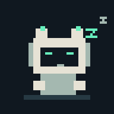
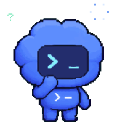
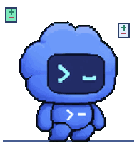
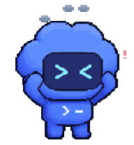
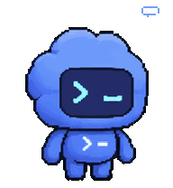
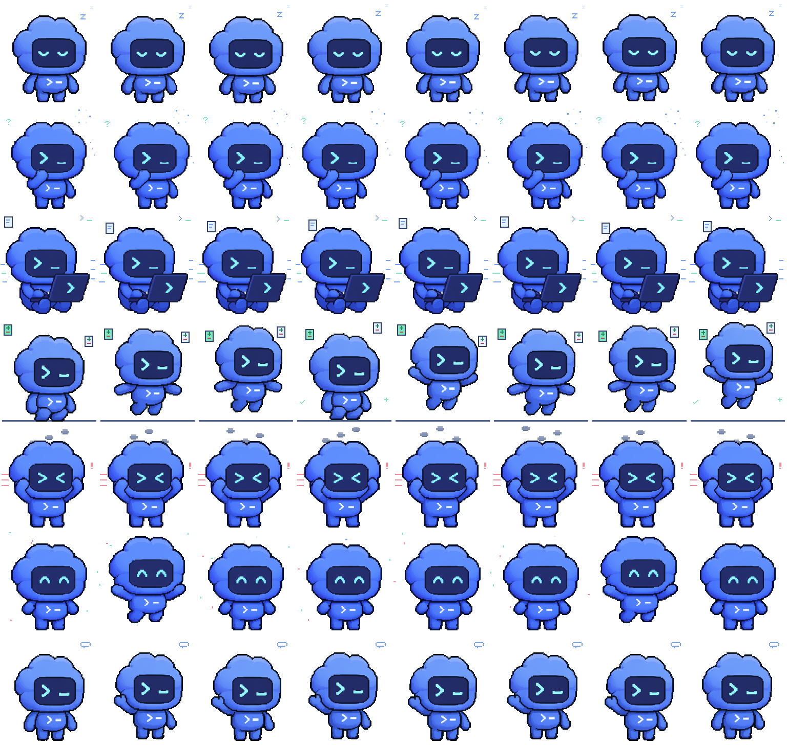

A little pet. A little more life.
Original blue Codex Pet poses, with separately authored codex-rpc pixel effects. The mascot is never redrawn or recolored. Six distinct loops run at 10 fps: full-body typing, pacing, patching, panic, celebration and snoozing, with a consistent expression per state.

idle
Original closed-eye pose breathes while Z pixels rise in a slow snoozing loop

thinking
Chin-stroking pet paces with a rotating planning gear and floating question glyphs
writing
Energetic whole-body key taps, flying code cards, terminal pixels and speed lines

patching
Focused arms and body stamp sliding plus/minus file cards onto a pixel workbench

error
Consistent original panic squint shakes beneath rising smoke and an alert glyph
done
Original smiling victory poses jump through confetti, then briefly settle

waiting
Approval/attention wave with accumulating speech-bubble dots, distinct from success
Optional animated status badges
24-pixel glyphs enlarged 4×. Existing static PNG badges remain available.
CommandThinkingDoneIdleApprovalEditingReadingReviewReadyError
See the animation contact sheet and source provenance
Eight sampled phases per state: idle, thinking, writing, patching, error, done, then the legacy approval/waiting loop. PNG/SVG pet previews preserve exact source pixels without effects. GIFs quantize colors to their 256-color palette.

Source hashes, pose schedule and effect authorship